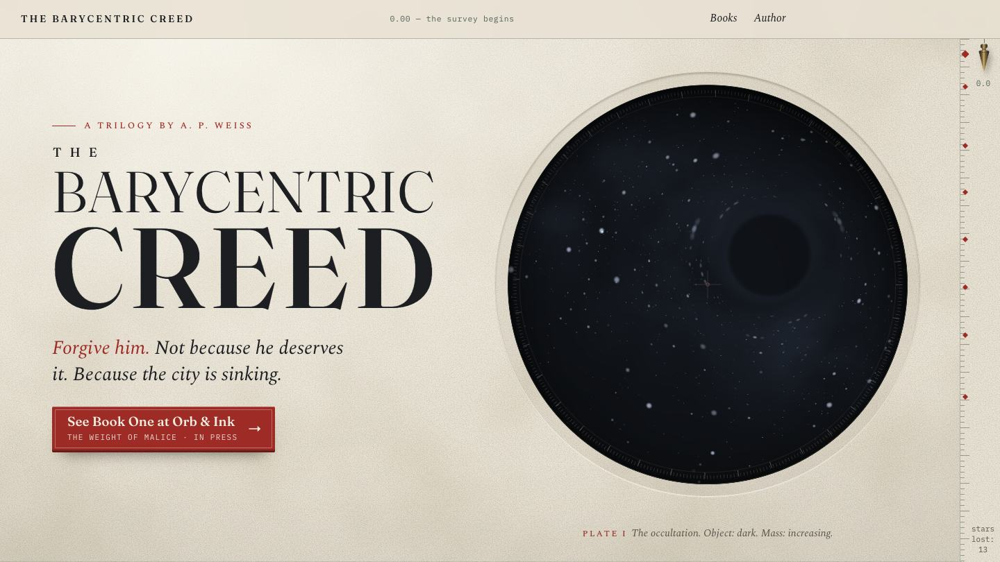
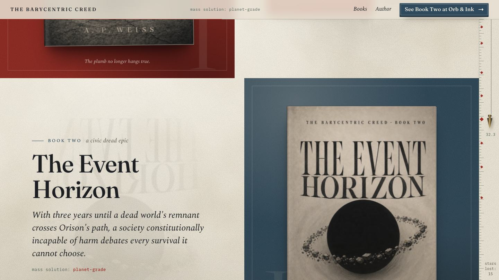
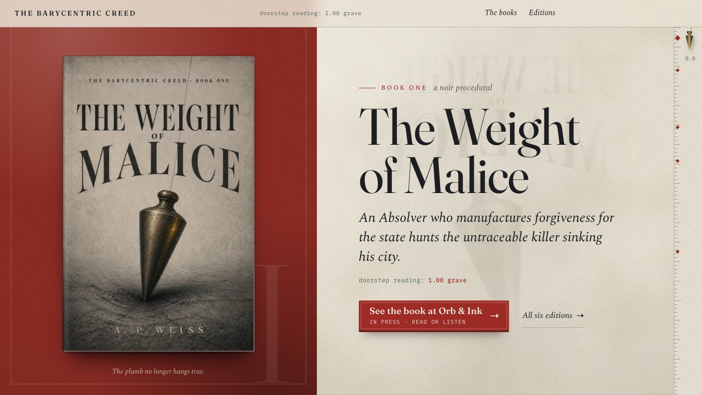

The Weight of Malice
ヴァージでは、残虐には質量がある。ひとつの殺人が家を沈める。そして誰かが、ひとつの街を沈めている。


ヴァージでは、道徳には重力質量がある。ひとつの殺人が家を岩盤へ沈め、それを浮かび上がらせるのは本物の赦しだけ。そして宇宙を欺くことはできない。



The Barycentric Creedこの世界を探索全3巻
The Barycentric Creed
A. P. Weiss
本を開けば、そこに世界がある。
書棚を見る · 43